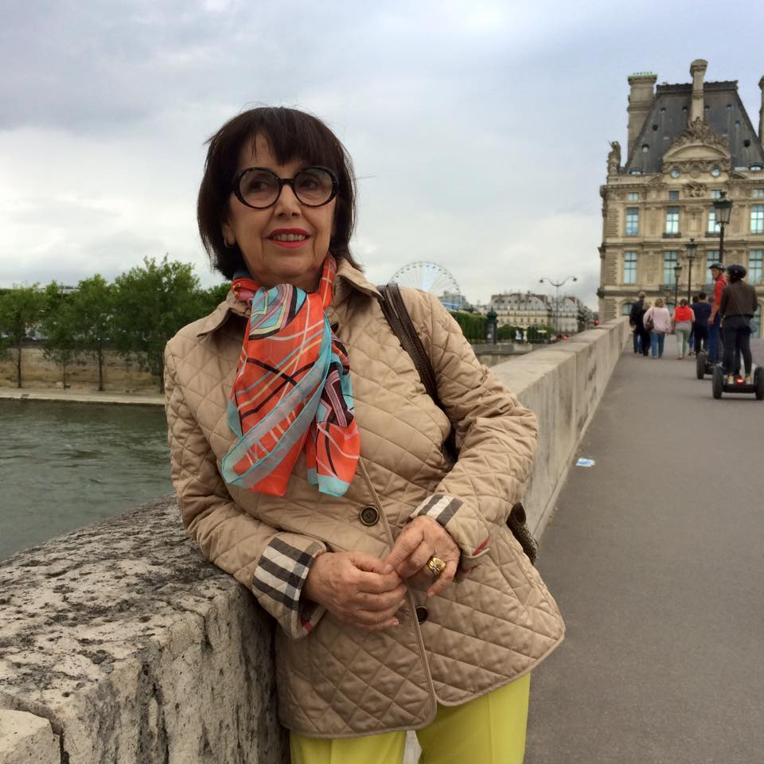

A Pedagogia como Ciência da Educação

Perfil profissional
Graduada em Pedagogia;
Pós-Graduada Especialista em Administração Escolar pela Pontifícia Universidade Católica de Campinas (PUC-CAMP);
Pós-Graduada Especialista em Psicologia da Educação pela Pontifícia Universidade Católica de São Paulo (PUC-SP);
Mestre em Educação pela Pontifícia Universidade Católica de São Paulo (PUC-SP);
Doutora em Educação pela Universidade de São Paulo (USP);
Pós-Doutoramento em Educação pela Universidade de Paris VIII e Universidade Federal de Sergipe (UFS).
Atua como Professora Titular e Pesquisadora do Programa de Pós-Graduação em Educação da Universidade Católica de Santos (UCS), tendo sido sua coordenadora (2004-2009) e vice-coordenadora (2010; 2012-2017).
Líder do grupo de pesquisa Práticas Pedagógicas: Pesquisa e Formação da Universidade Católica de Santos. Pesquisadora do CNPq - PQ Nível 2. Foi Pesquisadora visitante da Fundação de Amparo à Pesquisa do Estado de Alagoas (FAPEAL).
Foi Membro do Comitê Científico da Associação Nacional de Pós-Graduação e Pesquisa em Educação (ANPEd) e do Colegiado de Gestão do GT de Didática da mesma Associação.
Coordenadora de Publicação da área de Educação da Editora Cortez. Tem experiência na área de Pedagogia, com destaque para atividades de ensino e gestão escolar, tanto em instituições de educação básica quanto instituições de educação superior. É também parecerista, revisora e avaliadora de projetos, atuando em colaboração com diversos periódicos e instituições, tais como: INEP, CAPES e CNPq.
Suas pesquisas estão inseridas nos seguintes temas:
- Epistemologia da Pesquisa em Educação
- Pesquisa-Ação
- Práticas Pedagógicas
- Formação de Professores
- Pedagogia Crítica